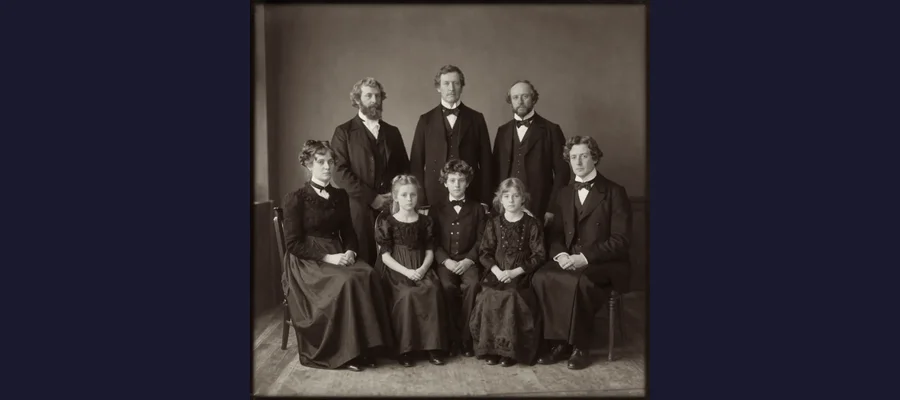
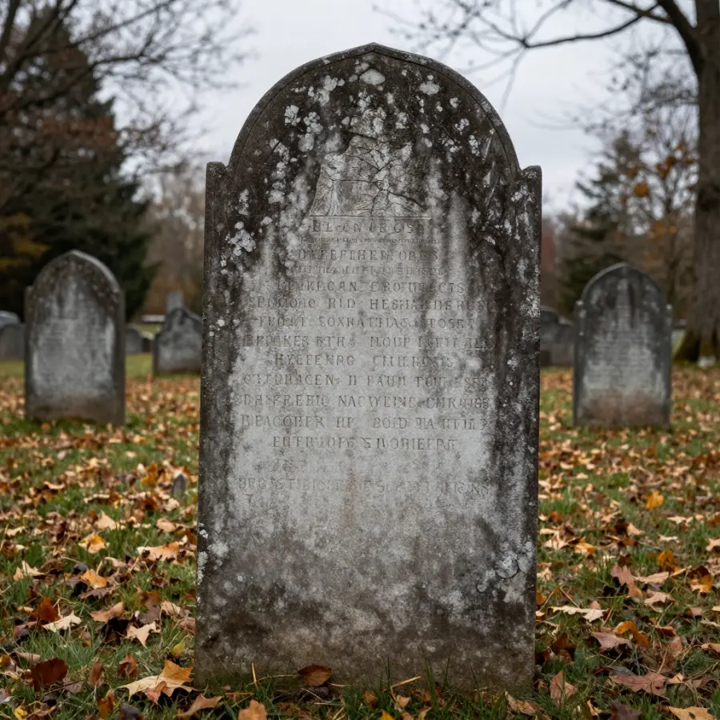

The New England Vampire Panic of 1892

A New England cemetery, similar to where Mercy Brown was laid to rest in 1892.
In the late 1800s, a terrifying disease swept through rural New England. It consumed its victims from within, leaving them pale, weak, and coughing blood. Desperate for answers, communities reached a shocking conclusion: vampires were real, and they were feeding on the living.
Overview
The Great White Plague
Tuberculosis, then called "consumption" because of how it seemed to consume its victims, was one of the most feared diseases of the 19th century. In rural farming communities like Exeter, Rhode Island, medical knowledge was limited, and the disease's pattern of infecting entire families seemed supernatural.

Tuberculosis often claimed multiple members of the same family, fueling supernatural fears.
💀 The Vampire Logic
People believed that if a family member died of consumption and others then fell ill, the deceased was rising from the grave to drain life from their relatives!
Evidence
Historical work on The New England Vampire Panic of 1892 is strongest when primary records, material traces, and later peer-reviewed analysis point in the same direction. This layered approach helps separate observations from retellings and reduces the risk of repeating popular but unsupported claims.
The Mercy Brown Tragedy
The most famous case occurred in Exeter, Rhode Island in 1892. George Brown's family was devastated by consumption. First, his wife Mary died in 1883. Then his daughter Mary Olive passed away in 1884. By 1892, his daughter Mercy and son Edwin were also sick.
Desperate neighbors convinced George that one of his deceased family members was a vampire causing Edwin's illness. They persuaded him to exhume the bodies. Mary and Mary Olive had decomposed normally, but Mercy's body - she had died in winter and was kept in a cold vault - appeared remarkably preserved.
⚰️ The Gruesome Ritual
Villagers removed Mercy's heart, burned it on a rock, and mixed the ashes into a drink for Edwin. Sadly, he died weeks later despite this desperate attempt.

Mercy Brown's gravestone in Exeter, Rhode Island, still attracts visitors today.
Competing Explanations
Competing explanations usually persist because each one fits part of the evidence while missing another part. Researchers test these models against chronology, physical constraints, and independent documentation to identify which interpretation requires the fewest assumptions.
A Widespread Panic
The Mercy Brown incident wasn't isolated. Folklorist Michael Bell has documented nearly 100 exhumations across New England between the 1700s and 1892. Connecticut, Rhode Island, Vermont, and Massachusetts all had cases where bodies were dug up and ritually burned to stop the "vampires."
📚 Dracula Connection
Bram Stoker's "Dracula" was published in 1897, just five years after the Mercy Brown case. Some scholars believe news of New England's "vampires" may have influenced the novel!
Open Questions
Open questions remain because source quality is uneven across time: some records are direct and detailed, while others are fragmentary or second-hand. Future archival discoveries, improved imaging, and more precise dating methods may refine conclusions without overturning well-supported core findings.
The Real Killer Revealed
Of course, there were no vampires. Tuberculosis is a bacterial infection that spreads through close contact - exactly what happened in families living in small, poorly ventilated homes. When one person became ill, others who cared for them often caught the disease too.
🔬 Science Wins
In 1882, just a decade before the Mercy Brown case, Robert Koch discovered the tuberculosis bacterium. The era of germ theory was just beginning to replace supernatural explanations.
The New England Vampire Panic stands as a fascinating example of how fear and lack of scientific understanding can lead communities to extraordinary measures. It reminds us how far medicine has come - and how easily humans can create supernatural explanations for natural phenomena.
References & Further Reading
Editorial note: We cross-check claims across multiple independent sources. See our Editorial Policy.